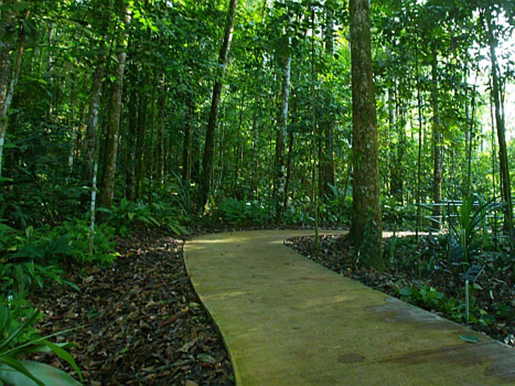
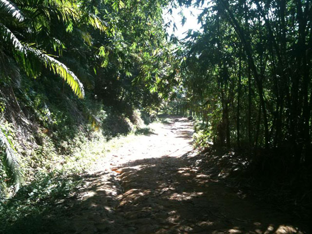
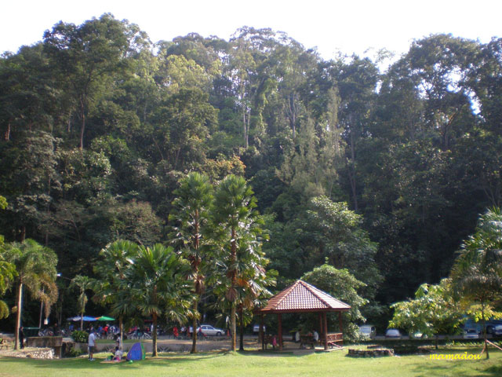

- 
- 
- 

About 80 years ago the present Institute grounds were little more than abandoned tin mine pits, vegetable gardens and shrubby forests. Since 1926, foresters and scientists have nurtured the forest back to life into a serene forest with its inspiring trees.
Few other forests in the world have been studied as extensively as our FRIM Forest Science Park. As the planted trees matured, a wealth of knowledge of their growth and forest ecology has been accumulated. Through this technologies and diligent efforts we developed products. Today, the Forest Research Institute of Malaysia has a worldwide reputation as a centre of excellent forestry research. Apart from the scientific value of the forest which has grown around us we also cherish the scenic beauty and serenity of the grounds. Shady, park-like arboreta as well as nature trails invite you for leisurely and educational walks. There is a diversity of animal life, of which the birds and the squirrels are most readily seen. All theses we would like to share with you, especially when undisturbed forests and unpolluted environments are rare treasure in the vicinity of a large city such as Kuala Lumpur. However, our grounds are small and have to serve many purposes. They would be easily spoiled by litter or damaged by erosion. Cutting, trampling or fire could destroy years of painstaking research. It is for this reason that we urge you to be sensitive to our natural environment so that our grounds can benefit the public for many years to come.